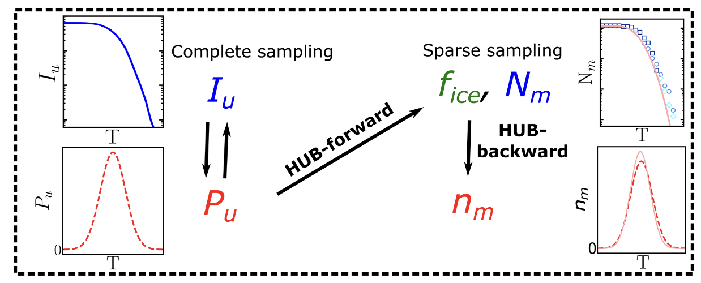
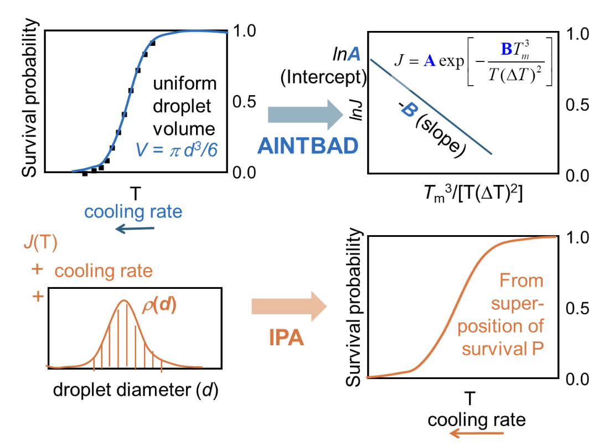

Codes & Scripts
Here are some of the computational models, scripts, and analysis tools I’ve developed.

HUB: Heterogeneous Ice Nucleation Analysis
AINTBAD & IPA: Homogeneous Ice Nucleation AnalysisHere are some of the computational models, scripts, and analysis tools I’ve developed.

HUB: Heterogeneous Ice Nucleation Analysis
AINTBAD & IPA: Homogeneous Ice Nucleation Analysis